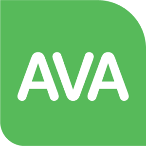
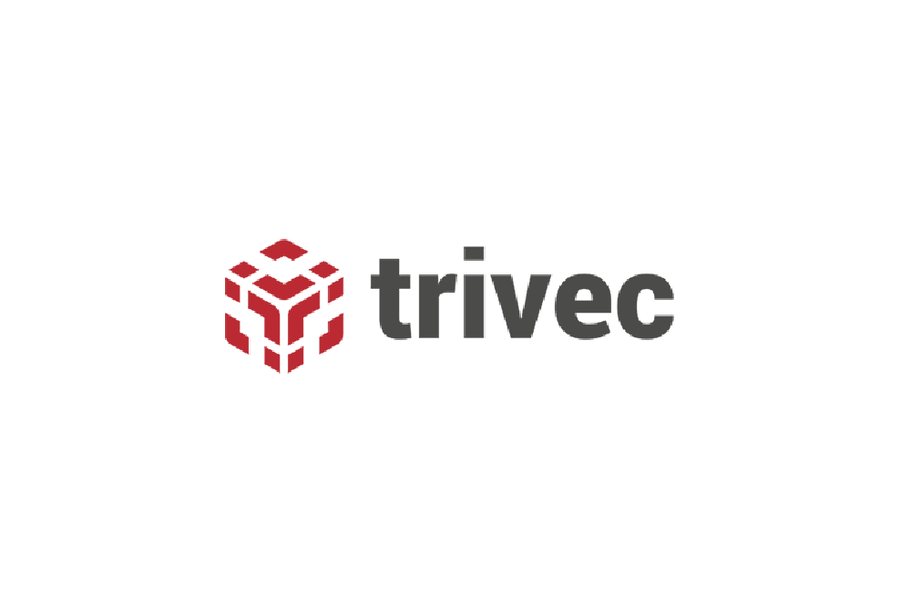
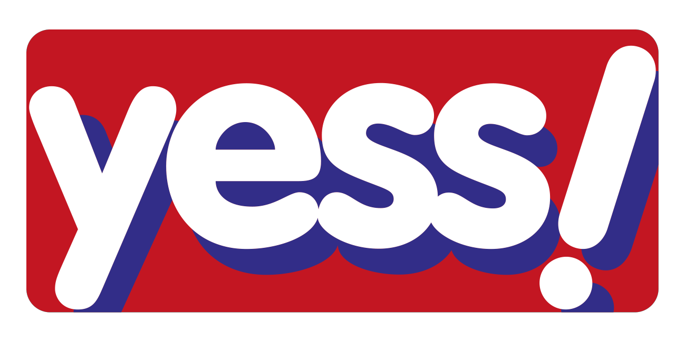
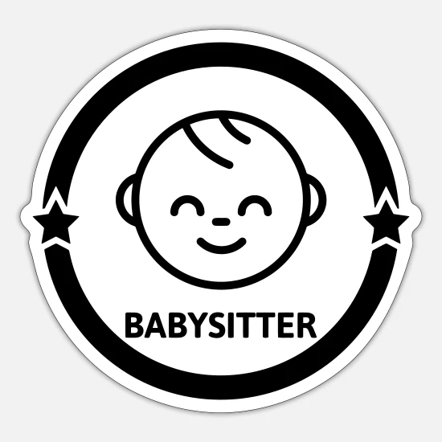

Zoals u ziet heb ik al vrij wat ervaring. Ik heb 2 jaartjes gewerkt bij de YESS! In Turnhout, nu werk ik al 2 jaar in de AVA en ik heb 2 weken stage gelopen bij Trivec een bedrijf dat is gespecialiseerd in het maken van kassa’s voor de horeca.
 AVA, Turnhout
Hierbij leerde ik nauwkeurig te werken en vriendelijk te zijn. Bij de kassa moet alles perfect zijn, want je gaat met geld om.
 Trivec, Turnhout
Hierbij leerde ik hoe werk in het “echte leven” eruit zag. Ik heb de taken van een boekhouder en een IT’er overgenomen, en dit gaf mij een beter beeld van wat er allemaal verwacht kan worden van mij.
 YESS!
Hier heb ik geleerd vriendelijk te zijn, klanten te helpen met hun vragen. Ze tevreden houden en het magazijn ordelijk en netjes. Dit was ook mijn eerste echte job.
 Babysitter, Turnhout
Als oppas leerde ik zorgzaam, sociaal en betrouwbaar te zijn. Ik won het vertrouwen van de ouders en kinderen. Ik gaf ze eten en hielp ze in slaap te vallen.